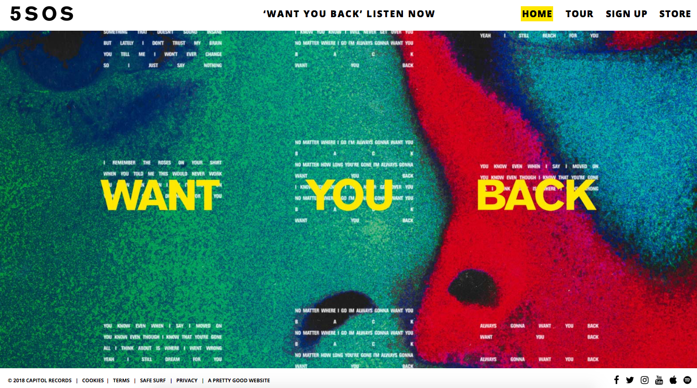

CONCURRENTIE ANALYSE
We moeten hierbij 3 concurrenten benoemen en ook de website van de concurrenten analyseren. Daarnaast word een oplijsting gemaakt van de positieve en negatieven punten.
21 PILOTS
NADELEN:
Als je op de officiële pagina komt zie je niets. Je moet eerst je email invullen.
Ze hebben direct al je gegevens nodig wanneer je op de website komt.
Wanneer je op de website terecht komt zie je enkel de naam van de band, helemaal geen sfeer.
VOORDELEN:
Op de homepagina staan direct alle incoontjes van de verschillende sociale media waarop ze te vinden zijn.
Je word wel op de hoogte gehouden via email, met de nieuwste liedjes en andere dingen.
FIVE SECONDS OF SUMMER
Imagine dragons

NADELEN:
- De homepage van 5sos is heel kort, een foto en bovenaan de verschillende pagina's
- Je ziet geen foto van de leden van de band op de homepage
- Onderaan de website heb je een link, met die link kom je op een website met allemaal verschillende artisten terecht. Die site toont de digitale werken van de verschillende artisiten.
VOORDELEN:
- Er is een link gemaakt naar verschillende social media's zodat je op verschillende medias naar hun singles kunt luisteren, het is goed want zo kun je een groter bereik halen via de verschillende media's.
- Wat ook heel leuk is op hun site is de store die ze gemaakt hebben met kledij voor hun fans
- Wat ik wel tof vind is dat er een foto op de voorpagina staat, dat is visueel wel aantrekkelijk voor de bezoeker vind ik
- Je kom ook via de tour pagina zien waar ze allemaal naartoe gaan, zo kan je gemakkelijk en snel je ticket bestellen. Dit is heel handig want je ziet de data's en plaatsen, dat is heel overzichtelijk.
X Ambassadors
NADELEN:
Dat het te druk is vanwege foto's op de voorgrond en dan nog foto's op de achtergronds
VOORDELEN:
De deze site kan je ook een store terugvinden waar je spullen van hun band kunt kopen, want wel heel leuk is om te hebben.
De pre-order op de site is ook een groot pluspunt, het is voor de mensen.